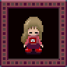

×


PlayWithEasy
Все эффекты в Yume Nikki
Автор гайда: PixelHorrorWiki
Лягушка
Пассивный эффект: В воде Мадотсуки двигается с нормальной скоростью.
Активный эффект: (1) Мадотсуки подпрыгнет, словно лягушка.
Местонахождение: The Forest World или Dense Woods B (Frog Path), взаимодействие с лягушкой.
Применение: На локациях The Pink Sea и Uboa's Trap Мадотсуки будет двигаться с нормальной скоростью, однако такой же эффект даёт "Bicycle".
Зонтик
Пассивный эффект: До тех пор, пока Мадотсуки не отменит эффект, будет идти дождь, а активация под этим дождём эффекта "Demon" вызовет раскаты грома и молнии.
Активный эффект: (1) Мадотсуки вращает зонт.
Местонахождение: Puddle World.
Применение: Потушить огонь в The Blazing Corridor (что так же может сделать и "Yuki-onna"), прекратить дождь в Dense Woods A.
Шапочка и шарф
Пассивный эффект: В форме снеговика Мадотсуки не может ущипнуть себя и проснуться, так как не имеет рук.
Активный эффект: (1) Мадотсуки превращается в снеговика, если идёт снег.
Местонахождение: Block World.
Применение: Взаимодействие с Мафурако в форме снеговика всегда будет возвращать к ней на обратном пути. В Blazing Corridor, если Мадотсуки встанет рядом с огнём, она начнёт медленно таять, пока не потеряет способность двигаться.
Юки-онна
 Пассивный эффект: До отмены эффекта будет идти снег.
Активный эффект: Нет.
Местонахождение: Snow World, взаимодействие с Юки-онной.
Применение: Потушить огонь в Blazing Corridor (что так же может сделать и "Umbrella"), прекратить снегопад в Snow World.
Пассивный эффект: До отмены эффекта будет идти снег.
Активный эффект: Нет.
Местонахождение: Snow World, взаимодействие с Юки-онной.
Применение: Потушить огонь в Blazing Corridor (что так же может сделать и "Umbrella"), прекратить снегопад в Snow World.
Нож
Пассивный эффект: Персонажи, способные двигаться, будут в ужасе убегать прочь, а анимация статичных персонажей ускорется, показывая панику.
Активный эффект:
- (1) Мадотсуки меняет руку, держащую нож.
- (2) Ударяя ножом других персонажей, Мадотсуки убивает или ранит их. Некоторые персонажи и обекты странным образом реагируют на удары.
Местонахождение: Dark World, к северо-востоку от ворот в The Wilderness.
Применение:
- Заставить персонажей, преграждающих путь, уйти
- Взаимодействовать с окружением
- Открывать новые локации
Ладонь с глазом
Пассивный эффект: Нет.
Активный эффект: Мадотсуки сжимает ладонь и перемещается в Нексус.
Местонахождение: Eyeball World, взаимодействие с Medamaude.
Применение: Можно использовать для быстрого возвращения в Нексус или побега из ловушек без необходимости просыпаться.
Пухляш
Пассивный эффект: Нет.
Активный эффект: Живот Мадотсуки бурчит.
Местонахождение: The Docks, взаимодействие с Sotoburu.
Применение: Нет.
Коротышка
Пассивный эффект: Мадотсуки может проходить через очень маленькие места.
Активный эффект:
- (1) Мадотсуки создает коротышку, которая будет ходить следом за ней. Всего их может быть семь.
- (3) Одна из которотышек взорвётся
Местонахождение: Candle World, поймать Гнома.
Применение:
- Попасть в Stairwell из Mars
- Попасть в Sewer Tunnel C из Sewer Tunnel B
Флейта
Пассивный эффект: Нет.
Активный эффект: (1) Мадостуки сыграет одну из нескольких коротких мелодий.
Местонахождение: The Music Room в локации the Mall.
Применение: Нет.
Неон
Пассивный эффект: Нет.
Активный эффект: (1) При использовании окружение будет подсвечено одним из трёх случайных цветов — красным, синим, жёлтым и фиолетовым; последующее использование случайным образом изменит цвет.
Местонахождение: Neon World, взаимодействие с Неоновым попугаем.
Применение: Нет.
Безликая
Пассивный эффект: Нет.
Активный эффект: (1) Голова Мадотсуки отделяется от тела и начинает кружиться вокруг.
Местонахождение: Processing Plant B в The Sewers, взаимодействие с безликим призраком.
Применение: Нет.
Голова
Пассивный эффект:
- Высота и скорость Мадотсуки понижаются.
- Мадотсуки не может ущипнуть себя и проснуться, так как не имеет рук.
Активный эффект: Нет.
Местонахождение: The Guillotine World, рядом с the Bed Room, взаимодействие с Гильотиной.
Применение: Позволяет увидеть Closet Madotsuki в полную величину.
Полотенце
Пассивный эффект: Нет.
Активный эффект: (1) Мадотсуки чихает.
Местонахождение: The Infinite Wilderness, взаимодействие с the Towel character.
Применение: Нет.
Кошка
Пассивный эффект: Нет.
Активный эффект: (1) Мадотсуки поворачивается к игроку и, раскрыв большие красные глаза, мяукает; при этом её поза напоминает манэки-нэко.
Местонахождение: Shield-folk World, взаимодействие с Nekoin.
Применение:
- Притягивает персонажей: можно убрать их с дороги, не используя "Knife", или найти скрытых персонажей
- Вызывать реакцию у некоторых персонажей
- Вызвать НЛО (в некоторых локациях)
Лампа
Пассивный эффект: Видимость в тёмных локациях увеличена, если включена лампа.
Активный эффект: (1) Включить/вылючить лампу.
Местонахождение: Lamp World, взаимодействие с Райто-окой.
Применение:
- Ориентироваться в Dark World, Dark Woods и FC Dungeon.
- В доме в The Wilderness.
Велосипед
Пассивный эффект: Скорость Мадотсуки возрастает в два раза.
Активный эффект: (1) Мадотсуки звенит в звонок.
Местонахождение: Graffiti Wolrd.
Применение: Позволяет намного быстрее перемещаться по миру снов, ловить быстрых персонажей и избегать безумных Людей-птиц.
Длинные волосы
Пассивный эффект: Нет.
Активный эффект: (1) Мадотсуки садится.
Местонахождение: Mural World, взаимодействие с Mouth Monster.
Применение: Нет.
Волосы?...
Пассивный эффект: Нет.
Активный эффект: (1) Появляется летающая вокруг и жужжащая муха.
Местонахождение: The Storage Room, Underground World, взаимодействие с Mouth Monster.
Применение: На короткое время можно отмечать места.
Блондинка

Пассивный эффект: Нет.
Активный эффект: (1) Мадотсуки сядет.
Местонахождение: Mural World, взаимодействие со светловолосым Mouth Monster.
Применение: Нет.
Платок
 Пассивный эффект: Мадотсуки невидима для персонажей в призрачной форме.
Активный эффект: (1) Мадотсуки превращается в призрака и становится полупрозрачной.
Местонахождение: Ghost World, взаимодействие с Fleebie.
Применение: Позволяет избежать безумных Людей-птиц (если, конечно, Мадотсуки не попытается с ними взаимодействовать).
Пассивный эффект: Мадотсуки невидима для персонажей в призрачной форме.
Активный эффект: (1) Мадотсуки превращается в призрака и становится полупрозрачной.
Местонахождение: Ghost World, взаимодействие с Fleebie.
Применение: Позволяет избежать безумных Людей-птиц (если, конечно, Мадотсуки не попытается с ними взаимодействовать).
Ведьма
Пассивный эффект: Нет.
Активный эффект: (1) Мадотсуки парит на небольшом расстоянии над землёй
Местонахождение: The Witch's island, взаимодействие с Кимаджо.
Применение: Можно использовать для полёта над крышей локации Mall; нажатие на Z вернёт Мадотсуки на крышу, а нажатие на единицу — удалит метлу, заставив девочку упасть с кровати и проснуться.
Светофор
Пассивный эффект: Мадотсуки не может ущипнуть себя и проснуться, так как не имеет рук.
Активный эффект: (1) Меняяет огни светофора между красным и зелёным.
Местонахождение: Dense Woods B (The Road), взаимодействие с Ситай-саном.
Применение: Красный свет влияет на неигровых персонажей, все персонажи замирают на месте.
Демон
Пассивный эффект: Нет.
Активный эффект: (1) Во время дождя можно вызвать гром с молнией. Во время снегопада — толко гром.
Местонахождение: FC Demon Room, взаимодействие с Demon.
Применение: Можно использовать, чтобы призвать Demon в FC Overworld B, который переместит Мадотсуки в Demon Room.
Желе
Пассивный эффект: Нет.
Активный эффект: (1) Мадотсуки качается вверх-вниз.
Местонахождение: FC World Sea Cliffs, взаимодействие с Buyo Buyo в FC Overworld.
Применение: Нет.